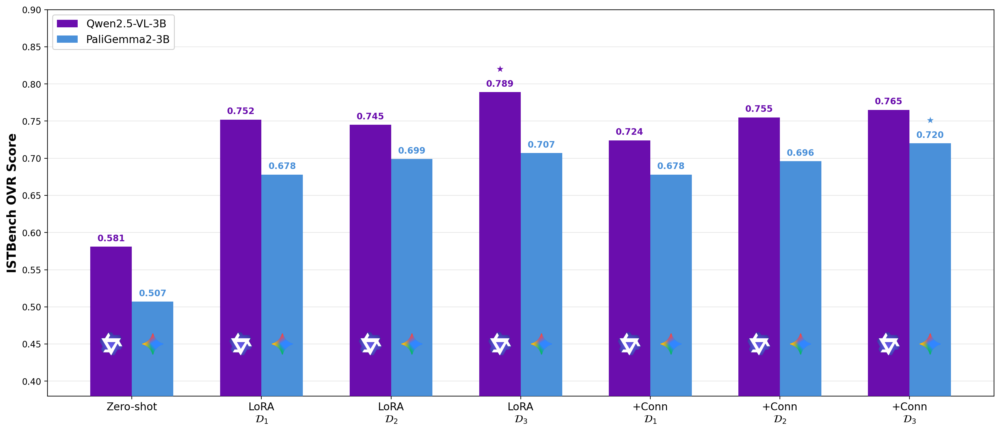
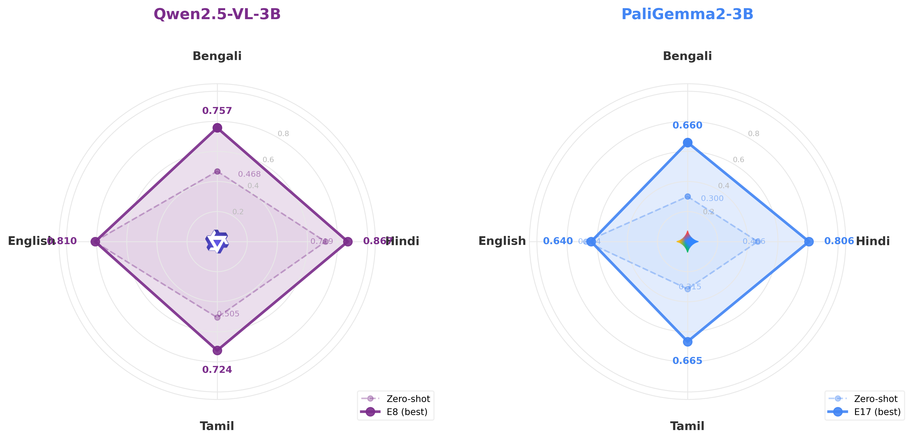
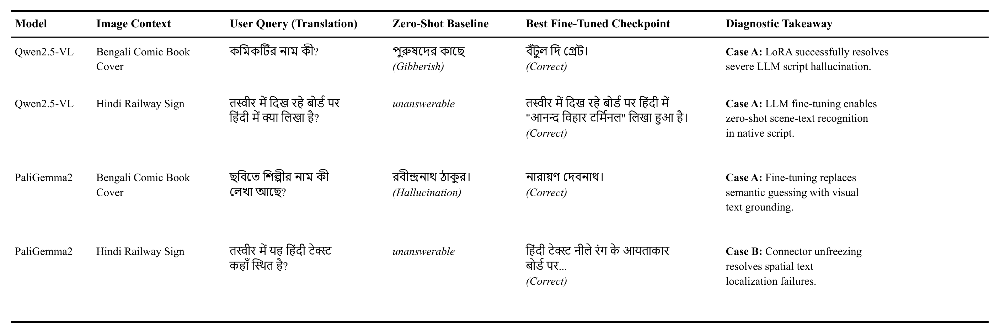

Vision-language models (VLMs) perform well on English scene-text visual question answering (VQA) but degrade sharply on Indic scripts such as Bengali, Hindi, and Tamil. Prior work addresses this by proposing new models, architectural changes or datasets, but none systematically diagnoses which architectural component—tokenizer, vision encoder, connector, or language model—constitutes the binding bottleneck for each script.
We introduce IstVqa, a diagnostic framework that isolates per-component failures through a systematic methodology. We begin by selecting three open-weight small-scale base VLMs—SmolVLM2 (2B), Qwen2.5-VL (3B), and PaliGemma2 (3B)—spanning diverse connector architectures, and apply a tokenizer fertility gate that eliminates SmolVLM2 due to severe Indic fragmentation. The two surviving models then undergo a controlled ablation grid: two training configurations (LLM LoRA-only versus LLM LoRA with connector unfreeze), three dataset scales (𝒟1=8.7K, 𝒟2=20.7K, 𝒟3=40.2K samples), across four languages, yielding 12 fine-tuning experiments.
Our Case A/B classification reveals that Qwen2.5-VL's Indic failures are predominantly Language-side (Case A): LoRA alone lifts the overall judge score from 0.581 to 0.789 (+35.8%), while connector unfreezing provides no benefit. PaliGemma2 exhibits a mixed profile: LoRA-only improves from 0.507 to 0.707, but connector unfreezing additionally helps at larger data scales (0.720 at 𝒟3), indicating a partial Vision-Projection bottleneck (Case B). We open-source IstVQA-qa, IST-VQA-Bench, and our complete evaluation pipeline.
A VLM processes a scene-text VQA query through four stages: Tokenizer, Vision Encoder (ViT), Connector, and Language Model (LLM). A failure at any stage can manifest as poor Indic VQA performance. IstVqa isolates the binding bottleneck with a controlled ablation grid.
Before structural ablations, we measure tokenizer fertility (tokens/character). Models with severe Indic fragmentation are eliminated. SmolVLM2 requires >1.7 tok/char for Bengali/Tamil and is removed from further fine-tuning; Qwen2.5-VL and PaliGemma2 proceed.
| Language | SmolVLM2 | Qwen2.5-VL | PaliGemma2 |
|---|---|---|---|
| Bengali | 1.824 | 1.080 | 0.543 |
| Hindi | 1.081 | 0.918 | 0.326 |
| Tamil | 1.731 | 1.088 | 0.440 |
| English | 0.200 | 0.200 | 0.200 |
Across 12 fine-tuning runs, Qwen2.5-VL peaks with LoRA-only at 𝒟3 ((0.789, +35.8%), while PaliGemma2 peaks with LoRA+Conn at 𝒟3 (0.720). Stars in the figure mark each model's best checkpoint.

| Model | Zero-shot | Best FT | Config | Δ |
|---|---|---|---|---|
| Qwen2.5-VL-3B | 0.581 | 0.789 | LoRA, 𝒟3 | +35.8% |
| PaliGemma2-3B | 0.507 | 0.720 | LoRA+Conn, 𝒟3 | +42.0% |

| Model | Bengali | Hindi | Tamil | English |
|---|---|---|---|---|
| Qwen2.5-VL | A | A | A | — |
| PaliGemma2 | A/B | A | A/B | — |
Representative examples illustrating each diagnostic category. Row 1: Case A success on Qwen2.5-VL (Bengali hallucination corrected by LoRA). Row 2: Case A on PaliGemma2. Row 3: Case B — spatial Hindi localization requires connector unfreeze. Row 4: ViT-level bottleneck where fine-tuning cannot fix dense handwritten Bengali.

We release IstVQA-qa at three nested scales and IST-VQA-Bench (~400 evaluation samples) covering Bengali, Hindi, Tamil, and English. Images come from six sources: BSTD, Docs, Crawl, IndicSTR12, Synth, and TextVQA. QA pairs are generated with a Gemini-based pipeline and verified via human quality checks.
| Language | 𝒟1 | 𝒟2 | 𝒟3 | Test |
|---|---|---|---|---|
| Bengali | 2,161 | 5,700 | 10,129 | 97 |
| Hindi | 2,177 | 5,151 | 10,162 | 99 |
| Tamil | 2,175 | 5,169 | 9,793 | 97 |
| English | 2,175 | 5,175 | 10,175 | 100 |
| Total | 8,688 | 20,672 | 40,259 | 393 |
Benchmark repository: github.com/soumya997/IST-VQA-Bench
@inproceedings{sarkar2026istvqa,
author = {Soumyadip Sarkar and Deeptendu Santra},
title = {{ISTVQA}: A Diagnostic Framework for Enabling Indic Scene-Text VQA in Small Vision-Language Models},
booktitle = {Indian Conference on Computer Vision, Graphics, and Image Processing (ICVGIP 2026)},
year = {2026},
address = {Kolkata, India},
note = {To appear}
}Questions? Please reach out via GitHub Issues on the IST-VQA-Bench repository.